GAMES101课程笔记（五）——Ray Tracing
引言
上篇笔记的发布已经是年前的事了，寒假忙着做自己的项目demo，疏于博客的撰写，拖得确实有点太长了，毕竟撰写一篇文章和单纯记笔记的区别还是挺大的，需要投入很大的精力。
（其实是笔者沉迷于游戏的世界一去不返）
本文将进入光线追踪的部分，这是笔者本科阶段非常感兴趣的一部分内容。现实世界的光照系统极其复杂，如何在虚拟世界中呈现出真实的光照效果是图形学中的一个重大问题，本篇文章篇幅较长，并且涉及较多的物理知识，希望读者耐心观看。
前文指路：
GAMES101课程笔记（一）——Transformation
GAMES101课程笔记（二）——Rasterization
Shadow Mapping——阴影映射
在Shading一节中，我们介绍过为物体着色的过程，但我们考虑的是一个非常理想化的场景，即场景中仅有光源和该物体本身。
当我们引入一个比较复杂的场景后，之前的着色过程就不够用。当物体和光源间存在遮挡物后，物体上势必会留下阴影，但该着色过程无法计算阴影。
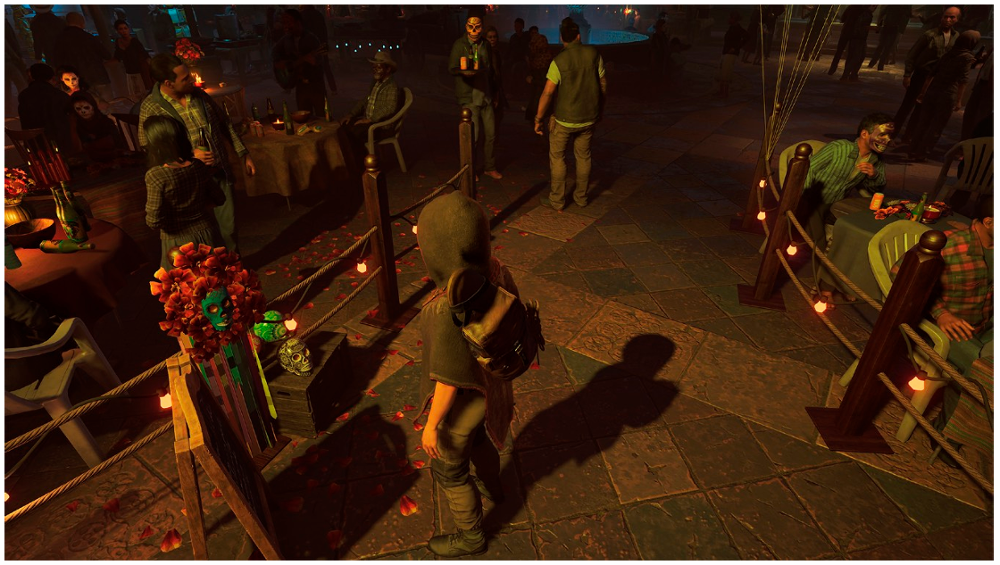
阴影对真实感的影响非常强烈，很多时候它能影响人对对象位置的判断。例如上图中，人物脚底的影子让我们觉得人物是真的“站”在地面上的。
阴影映射是一种在图像空间中的阴影计算方法，即该方法不需要获取场景中的几何信息。
阴影映射的核心思想是：若一个点不在阴影中，那它一定同时被光源和相机观测到。
具体步骤
因此阴影映射的步骤就分为两步，先从光源进行观测，再从相机进行观测。
第一步的示意图如下：
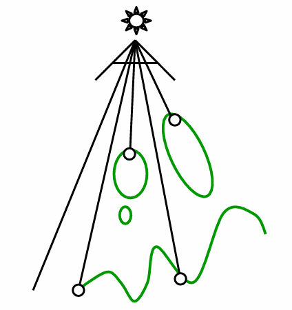
我们从光源出发，找到所有能看到的点，但不先着色，而是记录下它们的深度，这里会用到我们之前提过的Z-Buffer。
第二步中，我们从眼睛出发，如下所示：
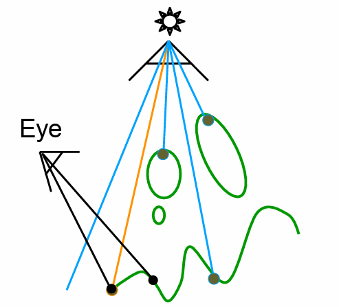
此时，我们将看到的点投影回光源的视角，并比较这些点的深度是否与之前记录的深度一致，如果一致，则表明该点不在阴影中（如图中橙色线标注的点），反之则在阴影中（如图中眼睛看到的另一点）。
课件中提供了一个具体的例子，考虑下面这个场景：
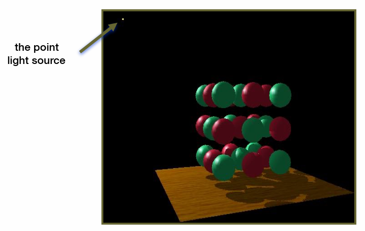
我们先从光源位置看向物体，得到深度图：
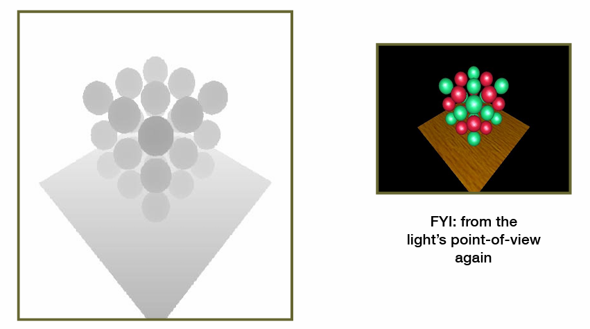
将其与相机视角的结果进行比较，就能获得阴影的位置：
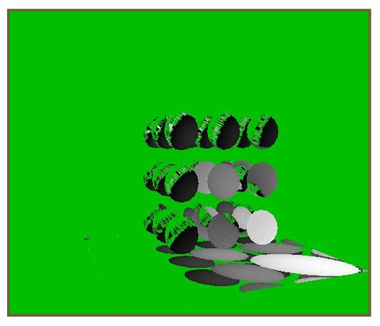
上图中的非绿色部分就是阴影，我们进行对应的渲染，就可以获得最开始的那张图片。
缺点
阴影映射广泛应用于现在的游戏和早期的动画中，但它存有一定的缺点。
首先是该方法基于点光源，获得的阴影是硬阴影，即每个点要么在阴影中，要么不在，因此阴影的边缘会非常清晰。
这里我们插入介绍一下软硬阴影的概念，我们以太阳、月亮和地球构成的系统为例进行说明。
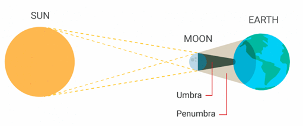
我们知道月亮会遮挡住部分太阳光，但其实遮挡存在两种情形。
一种是图中深色的锥形部分，这部分里太阳光被月亮完全遮蔽，我们称之为本影（Umbra）。
另一种是其余的部分，由于太阳并非是一个点光源，因此会有些区域只接收到一部分阳光，我们称之为半影（Penumbra）。
硬阴影其实就是只渲染本影的情况，而软阴影附加上了半影，由于现实中的多数光源都非点光源，所以一般都会存在半影。
其次其渲染质量依赖于阴影图的分辨率，分辨率过低就会出现明显的锯齿现象。
光线追踪简介
现在我们正式进入光线追踪部分，我们使用光线追踪，主要是为了解决光栅化下一些无法处理的全局效果。
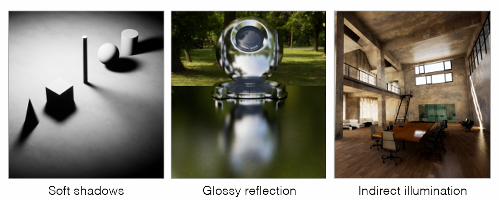
上图中展示了几个典型的光栅化难以处理的效果，其中就包括了我们前文中提到的软阴影。
光栅化还有一个特点是速度快但效果相对较差，例如PUBG里的场景，仔细看可以发现还是非常粗糙的。
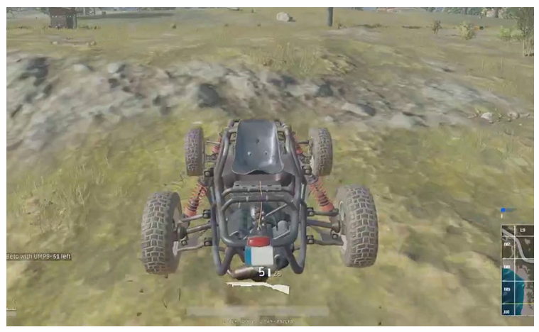
光线追踪的特点恰好与之相反，它拥有极度准确的效果，但需要较多的时间来渲染，因此我们在实时场景下会更多选用光栅化，而在离线场景下使用光线追踪。
基础算法
介绍光线追踪算法前，我们先明确一下“光线”这个概念。
主要是以下这三点：
- 光沿直线传播
- 光线之间不会发生碰撞现象，它们只会穿过然后沿原来的方向前进
- 光线从光源传播到我们眼中，该光路是可逆的，即如果我从眼睛位置放射光线，也能传播到光源
Ray Casting——光线投射
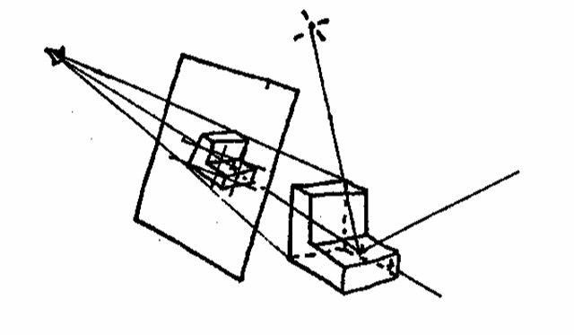
光线投射的基本思路是从眼睛放出射线，穿过屏幕上的每一个像素，然后在触碰点上向光源放出射线，从而判断该点是否在阴影中。
接下来我们对该算法进行具体的阐释，下图是一个典型的小孔相机模型（将相机/眼睛视为一个点）。
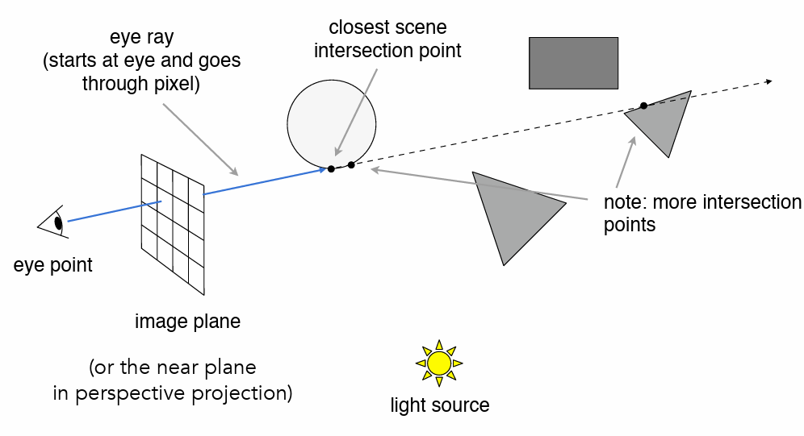
我们从相机出发，向成像平面上的像素点放出射线，并找到最近的触碰点，图中该射线穿过了三个碰撞点，我们选取最近的那个，这对应光栅化中的深度测试。
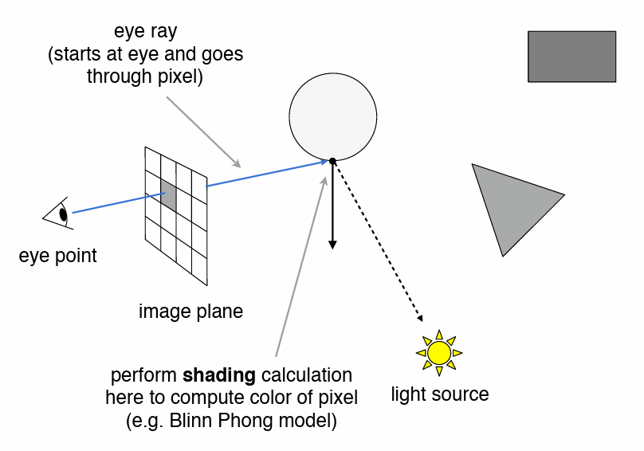
然后我们从该点向光源引一条射线，获知了光源和法线信息后，就可以用之前提到过的各种方法（如Bling-Pong模型）来进行渲染。
不过光线投射算法只考虑到了单次反射的光线，现实中光线可以反射无数次，因此该方法的效果并不出众。
Recursive Ray Tracing——递归光追
递归光追算法（也是Whitted-Style光追）在光线投射的基础上，允许光线进行多次反射和折射，同样以上述场景为例，在找到第一个触碰点之后，我们让射线按真实的物理法则进行反射和折射。
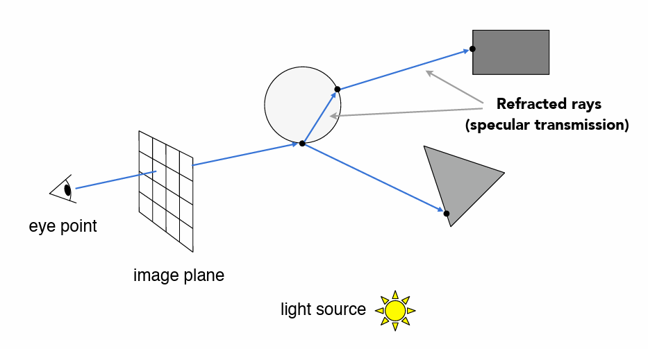
从相机出发的这条射线我们称之为primary ray，经过折射和反射形成的新射线则是secondary ray，secondary ray也会找到自己的触碰点，最后我们从所有的触碰点向光源引一条射线（shadow ray），计算出所有触碰点的颜色后，叠加到原像素上，就获得了最终的渲染结果。
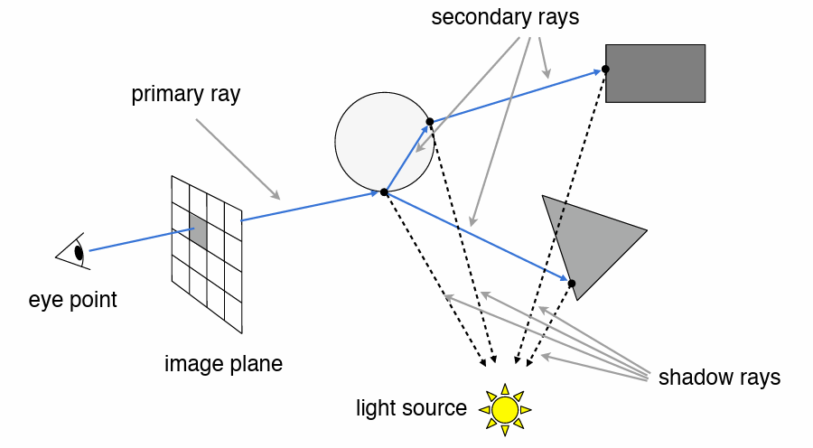
值得一提的是，为了防止触碰点太多出现类似过曝光的效果，通常会限制光线的反射/折射次数，或者为光线附加一个能量，在每次反射/折射时能量就会衰减。
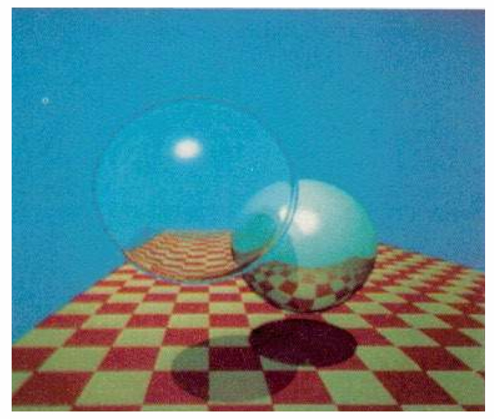
碰撞点
了解了光追算法的大致流程后，我们就可以探讨一些更细节的东西，例如碰撞点该如何计算。
基本计算
接下来就要涉及很多数学公式了，在此之前，我们先对光线做一个数学定义。
光线由其起点$o$和方向$d$定义，如下图所示：
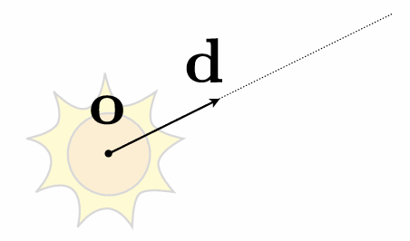
从而，我们得到光线的表达式为：
好的，那假设我们现在有一条光线和一个球体，我们该如何计算触碰点呢？
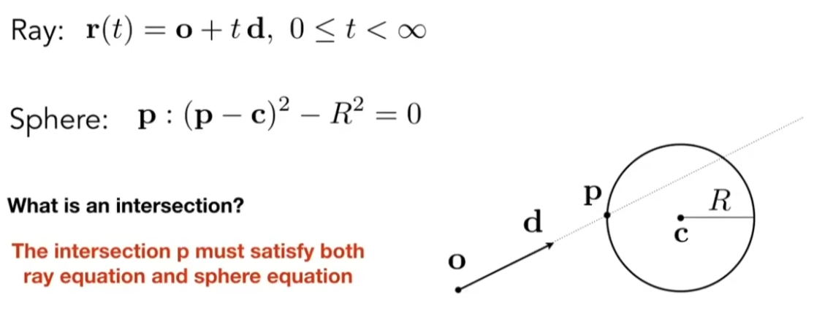
其实很简单，用高中数学知识就知道，联立方程求解就行了，也就是解下述方程：
这是一个一元二次方程，在满足物理意义的前提下，其解个数反映了光线与球体的相交情况。
（其实就是满足$0\leq t<\infin$，下文中就不再特地注明这一点了）
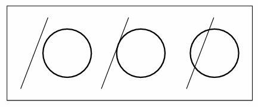
从这个特殊例子出发，我们可以得到一个更普遍的过程：
已知光线方程：$r(t)=o+td$
已知几何体表面方程：$f(p)=0$
我们可以通过求解方程$f(o+td)=0$的形式来求得碰撞点。
三角面模型的碰撞点
现在我们考虑如何计算光线与一个三角面模型的碰撞点，因为这类模型通常只给出每个三角面的信息，所以我们没法用一个统一的方程来表示其表面，故而我们需要想一些其它方法。
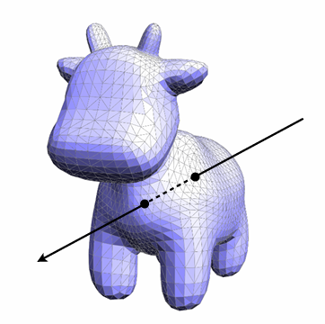
最简单的方法就是把所有三角面都算一遍，看是否与光线相交。
至于如何计算光线和单个三角面的交点，我们会将这个问题拆为两个步骤解决：
- 计算光线与三角面所在平面的交点
- 判断交点是否在三角面内
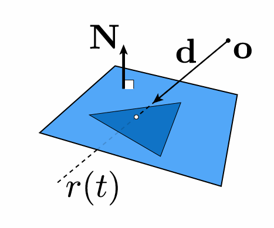
平面可以由其上一点$p’$加上其法向量$N$来定义，其数学表达式为：
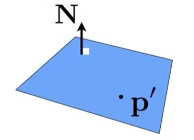
这与高数中我们初次接触到的平面方程$ax+by+c+d=0$其实是一致的。
知道了表达式，我们就可以用之前的步骤代入求解，我们的解为：
（其实这里有可能出现光线与平面平行的情况，即$d·N=0$，但我们这里不列入讨论）
Möller–Trumbore算法
上面提到的方法还是比较麻烦的，Möller–Trumbore算法可以直接通过三角面的顶点坐标来计算交点坐标，该算法认为交点应满足方程：
这里的$P_i$是三角面的顶点，等式右边用到了我们之前提到过的重心坐标，只要解出来系数满足重心坐标要求，就认为有交点，其解为：
其中：
该算法就可以快速计算光线与三角面的交点。
包围盒
为了加速对碰撞点的判断，我们可以引入包围盒。
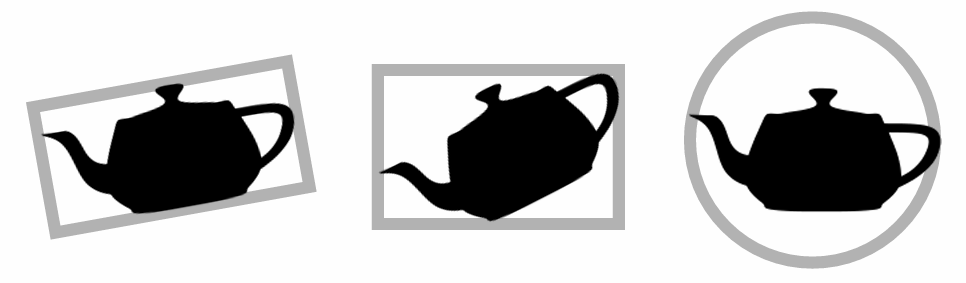
如上所示，包围盒是将物体完全包围在内的一种几何体，虽然其名为“盒”，但可以依据实际情况来选取不同形状的包围盒。
包围盒的加速逻辑很简单：如果光线与包围盒都没有碰撞点，那它和物体也一定没有碰撞点。
我们这里就讲长方体形的包围盒是如何起作用的。
这里我们将长方体进行全新的理解，认为长方体是三组对面的交集。
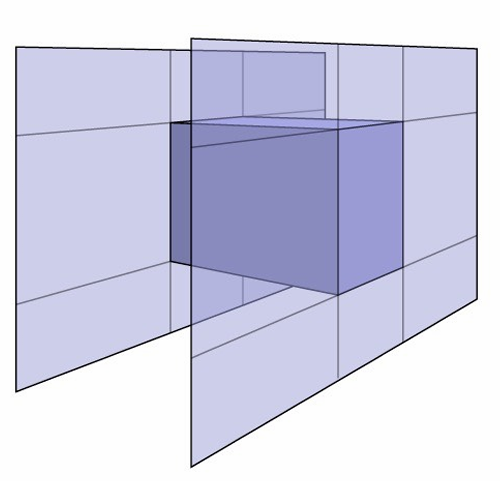
上图就是长方体的一组对面，三组对面刚好对应长方体的六个面。
这么理解是因为我们常常会使用一种叫轴对齐包围盒（Axis-Aligned Bounding Box）的包围盒，简称AABB包围盒，它的对面全部与坐标轴平行或垂直。也就是说，AABB包围盒可以用三个轴上的三个区间来表达。
我们以二维情况为例来解释AABB包围盒是如何计算碰撞点的。
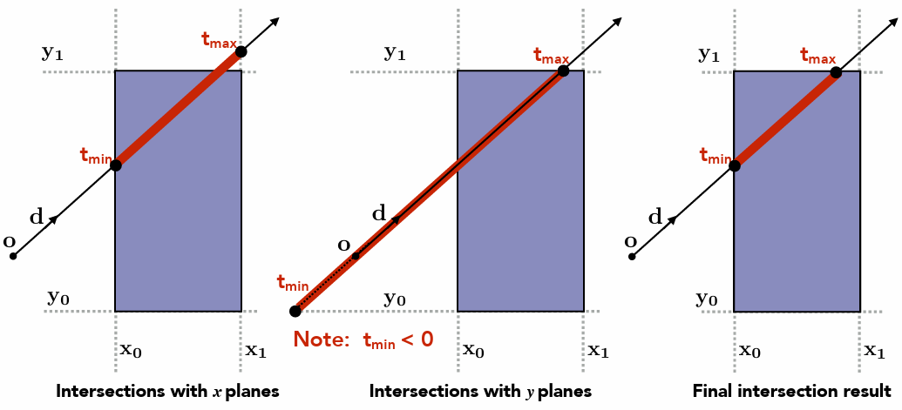
二维情况下，长方形包围盒由两个对面（其实应该叫对线）的交集构成，分别对应$x$方向与$y$方向。
我们先求$x$方向上的对面与光线的交点，可以获得光线在这两个对面间的为$[t{ {x}{min} },t{ {x}{max} }]$对应的部分。
而$y$方向上，我们虽然求得结果是$[t{ {y}{min} },t{ {y}{max} }]$，但为了保证$t\ge 0$，因此其区间为$[0,t{ {y}{max} }]$。
最后，我们对这两个区间求交集，就获得了最终的区间为$[t{ {x}{min} },t{ {y}{max} }]$，而这就是光线在整个包围盒内部的部分，三维情况下同理。
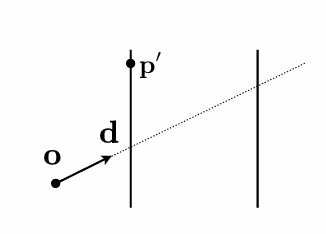
对平面求交点是一件比较简单的事情，上图中所示的情形，我们可以写出其解为：
只需要一次减法一次除法，相比于对任意面的求解，减少了不少计算量。
我们继续通过二维情况下的一个例子来说明包围盒是如何加速光线追踪的。
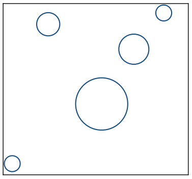
考虑上图中的情况，我们已经找到了待渲染物体的一个包围盒，接下来我们要将该包围盒划分为数个网格（Grid）：
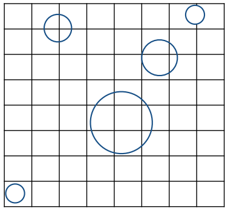
之后我们将所有带有物体表面的网格标记出来：
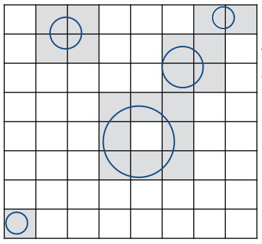
这样当我们计算光线追踪时，可以先判断光线穿过的网格是否被标记，只有被标记的网格才进行具体的计算：
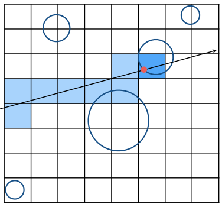
至于光线穿过的格子如何进行计算，那就是另一个话题了，其实本质上就是光栅化一条线的过程。
网格的划分数量会影响加速的效果，极端情况下，只有一个网格时，就相当于没有划分，也就没有加速效果；而网格划分过于密集的话，又会因为要判断的网格太多，导致加速效果不明显，甚至起到反作用。
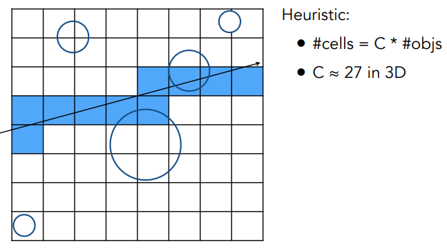
一个普遍的结论是网格数与场景中的物体数相关，在三维情况下理想的数量应该是27倍的物体数，不过还是要具体问题具体分析。
网格划分有一个问题，那就是适用于那些几何体均匀分布的场景，一旦面临分布不均匀的场景，会出现大量空白网格。
空间划分
为了更好地应对几何体分布不均匀的场景，我们还会使用空间划分的方法，以下是几种典型的空间划分数据结构：
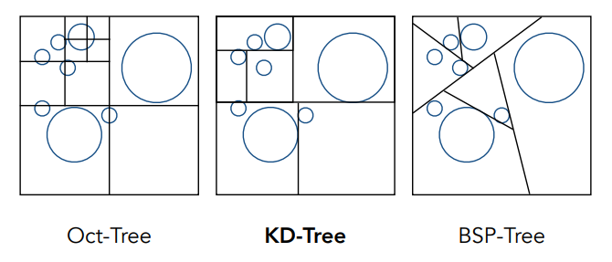
图左是八叉树，就是将空间按直角坐标系划分为等大的八块区域，对新的小区域也能进一步进行划分（图中是2维情形，此时应该称为四叉树更恰当），我们可以为其指定一个划分终止条件，例如如果一次划分后的区域内只有一个区域内存在表面，则不进行该次划分，从而减少空白区域的出现。
图中是KD树，它每次划分也按照直角坐标系方向，但只取一个方向将区域划分为两个部分，不过不要求这两个部分大小一致，一般来说通常会交替使用不同的坐标轴方向来划分，例如图中就是$x$方向和$y$方向交替划分，这样可以保证划分基本上是均匀的。
图右是BSP树，它在KD树的基础上，允许划分朝任何方向，这带来了极高的划分自由度，但同时也带来了难以计算的难题。
这里我们就详细介绍一下KD树，正如其名，它用树的形式保存了空间划分的信息，如下所示：
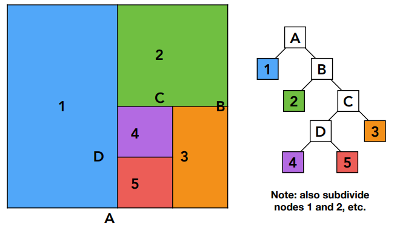
其中的$ABCD$节点表示了几次划分，例如$B$是在$A$划分的右半区域上进行的，因此它就是$A$的右孩子，叶子节点则表示了最终划分完的所有区域，因此，非叶子节点和叶子节点要存储的信息是不同的。
非叶子节点表达划分，因此要存储的信息包括：
- 划分方向
- 划分坐标
- 孩子指针
叶子节点要存储的信息有：
- 几何体列表
注意，非叶子节点中不存储任何几何体信息。
KD树对光线追踪的加速，是通过逐个判断光线与划分是否相交来实现的，例如下图中的光线：
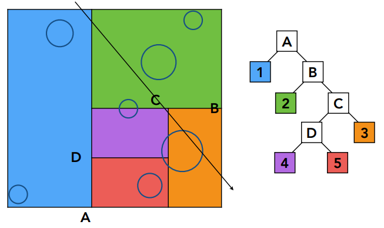
我们首先明确一个事实：当光线穿过一个划分时，也必然穿过其划分出的两个区域。
于是，我们就可以从根节点出发，逐个判断，在这个例子中，我们发现光线穿过了划分$A$，因此，对于$A$的左孩子区域1，我们需要进行进一步的计算；而对于其右孩子划分$B$，我们要再次进行判断：
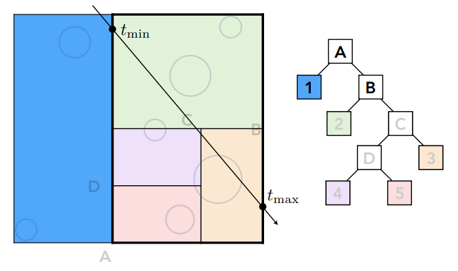
对于那些没有相交的划分，例如划分$D$，我们就可以不再遍历其子树，如下所示：
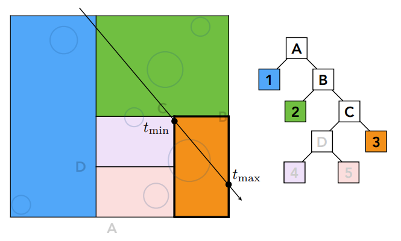
从而能只计算那些可能有交点的区域。
KD树存在下述问题：
- 很难判断一个形状是否在一个区域内，也就是划分的位置不好确定
- 划分无法保证物体只存在于一个区域内（例如上例中右下角的圆，同时出现在了三个区域中）
因此KD树的使用也越来越少。
物体划分——层次包围体
KD树的问题也是多数空间划分方法的共性问题，物体划分方法则能规避这些问题。
物体划分从场景中的物体角度出发进行划分，这里介绍其中一种方法——层次包围体（Bounding Volume Hierarchy，简称BVH）。
BVH也通过树形结构保存信息，这里介绍如何构建一棵BVH树。
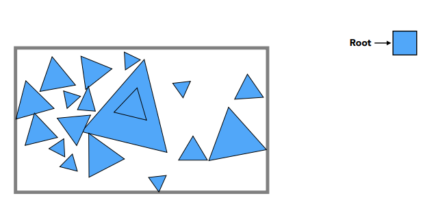
如上图中的这个场景，里面分布着许多的三角形，我们将原始的场景作为根节点。
然后，我们将所有的三角形分为两部分，并求出它们的包围盒，分别作为根节点的左右孩子：
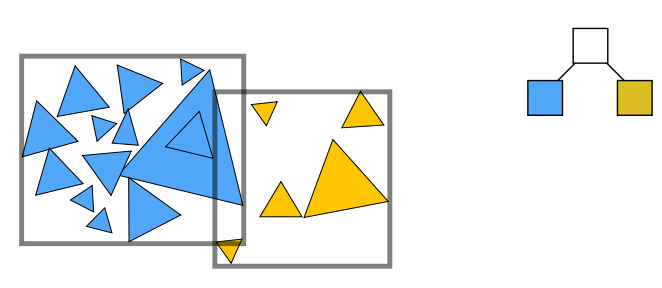
反复重复上述步骤，直到满足实际要求，最终结果如下所示：
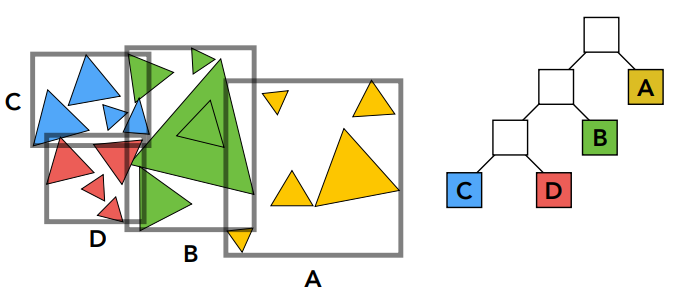
关于划分方向和位置的确定，有一个简单的方法：
- 每次划分把最长的那一维分割，例如矩形就垂直于长的那条边划分
- 位置选取为中间的那个物体，注意这里并不是包围盒中间，而是次序中间
同样，这里列出BVH树中存储的信息：
非叶子节点表达划分，不同于KD树，只要保存包围盒信息就可以：
- 包围盒
- 孩子指针
叶子节点要存储的信息有：
包围盒
几何体列表
至于加速光线追踪的部分，其实和KD树是类似的，也是从根节点出发进行判断，这里给出伪代码：
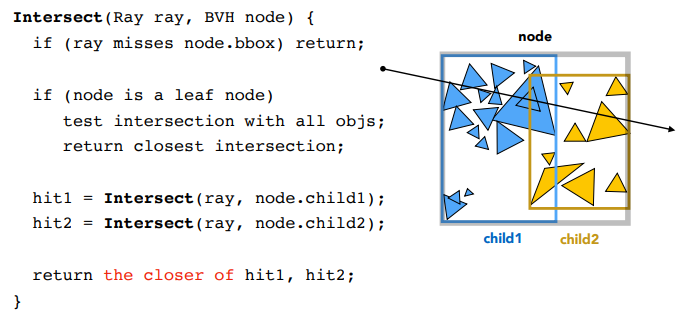
BHV的优点就在于一个物体只会存在于一个包围盒中，但是各个包围盒之间会出现重叠的现象，但相比于空间划分方法，BHV的实现更为简单，效率也更高，因此得到了广泛的应用。
基础辐射度量学
在进一步深入前，为了能更准确地描述光的信息，我们需要一些辐射度量学的知识，这里仅介绍一些基础知识。
辐射能量与功率（通量）
辐射的能量通常用符号$Q$表示，单位为焦耳（$J$）。
功率代表着单位时间内放射、反射、传递等过程中的辐射能量，其定义式为：
单位为瓦特（$W$），在照明场景下，还有一个类似的概念称为光通量，其单位为流明（$lm$）。
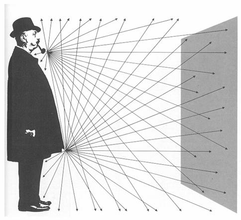
我们能在上图中看见有关通量的一个形象示例，在单位时间内通过右侧平面的光辐的数量就是光通量。
重要光照物理量
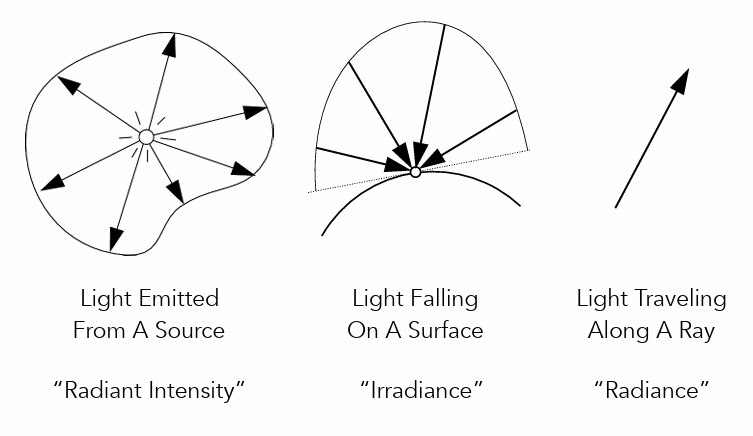
在了解了基础的能量与通量后，我们就能来关注以上几个重要的物理量，分别是发光强度、辐照度和辐射率，它们对应了上面三个典型的辐射场景。
Intensity——发光强度
当有一个在向外放射光线的点时，我们引入发光强度的概念来描述它。
发光强度被定义为是点光源在单位立体角上放射出的功率，其数学表达式为：
其单位为坎德拉，简称坎（cd）。
立体角的概念类似于角，角的定义是弧长比上半径，而立体角的定义是表面积比上半径，如下所示。
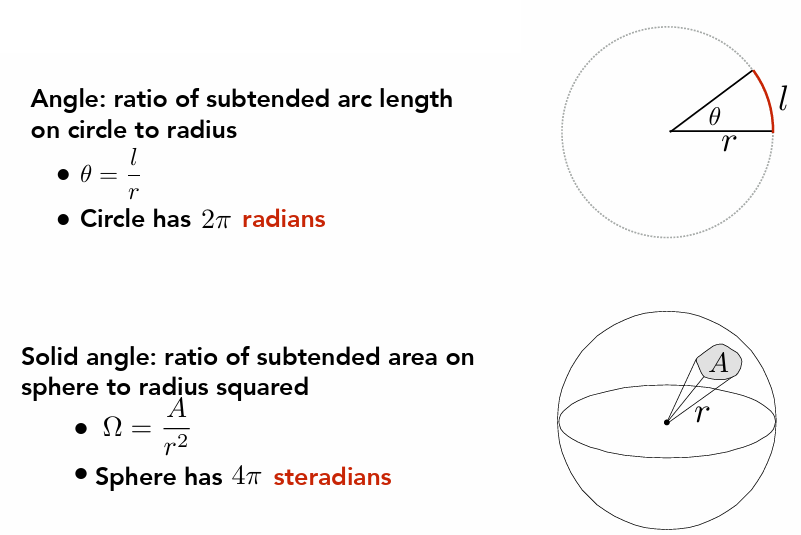
单位立体角的计算如下：
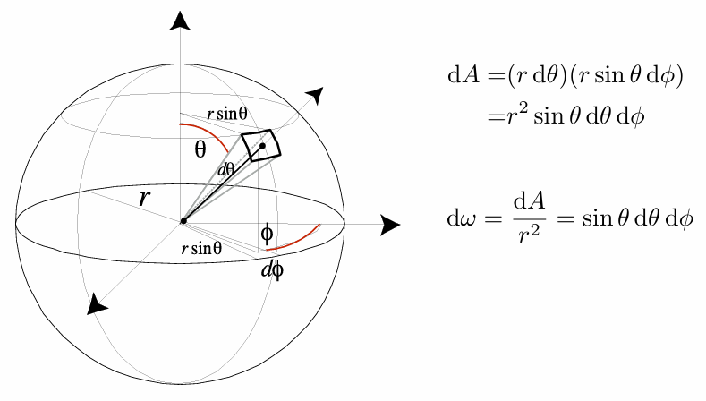
主要思路是先取单位表面积，然后求出单位立体角，其推导过程类似于高数中球坐标系下的三重积分，这里就不再详细深入。
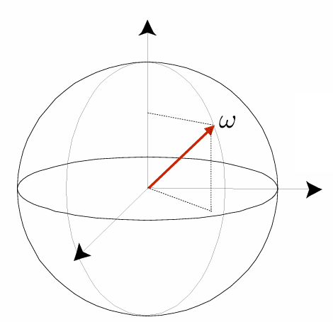
通常我们就用向量$\omega$来代表方向。
特殊地，对于一个均匀放射光线的光源：
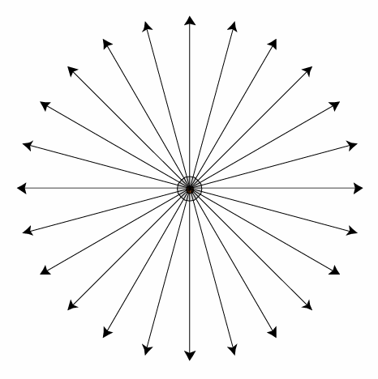
如果我们将发光强度在整个表面上进行积分，那么就应该有：
从而我们获得：
就能够轻松得到表面上任意点的发光强度。
Irradiance——辐照度
辐照度用以描述一个区域吸收光照的情况，它被定义为是物体表面单位面积上所吸收的功率，其定义式为：
其单位为勒克斯（lx）。
在Shading一文的Blin-Phong模型部分，我们其实已接触过辐照度的相关性质，我们得出过结论：
- 着色点接收到的能量与入射角$\theta$的余弦值成正比。
- 某一点接收到的能量，与它到光源距离的平方成反比
即：
当时所说的能量，其实就是这里的辐照度（着色点就是单位面积）。
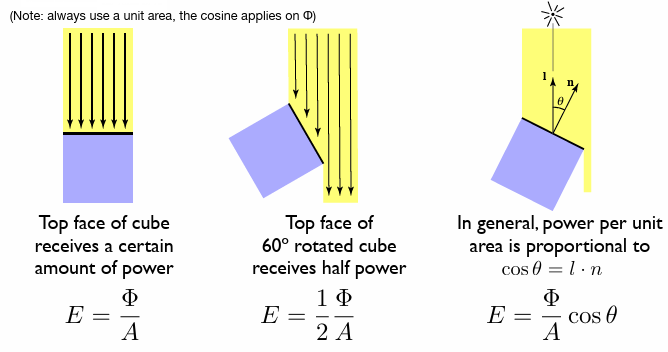
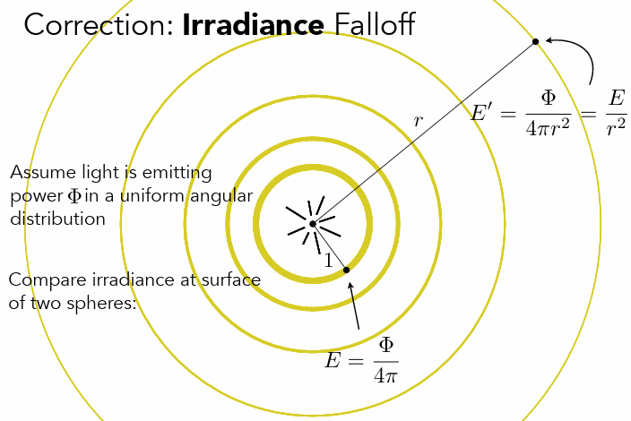
Radiance——辐射率
当我们要 描述一条光线在传播过程中的属性时，我们引入辐射率的概念。
辐射率被定义为：指定方向上的单位立体角和垂直此方向的单位面积上的辐射通量。
其定义式为：
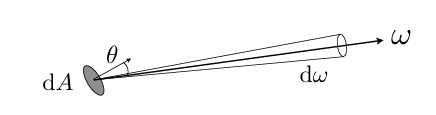
其单位为尼特（nit）。
从辐射率定义中的单位立体角和单位面积出发，我们可以将辐射率从另外两个角度理解：
- 辐射率是单位立体角上的辐射度
- 辐射率是单位面积上的发光强度
辐照度与辐射率
辐照度与辐射率在图形学中的使用非常广泛，我们着重讨论一下它们之间的关系。
辐照度和辐射率之间的区别在于，辐照度描述一个区域吸收光照的情况，而辐射率描述该区域在特定方向上吸收光照的情况。
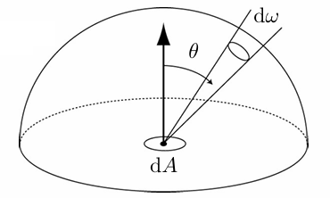
如上图中，辐照度关注整个半球面吸收的所有光照，而辐射率仅关注$d\omega$方向上的光照，从而我们得出：只要把整个半球面上的辐射率积分，就能获得辐照度。
即：
双向反射分布函数——BRDF
双向反射分布函数（Bidirectional Reflection Distribution Function，简称BRDF）使用了我们提到的辐照度与辐射率之间的关系，是一个非常好的光照模型。
我们现在来重新审视光的反射，在反射场景下，一束光会被反射到四面八方（漫反射与镜面反射）。
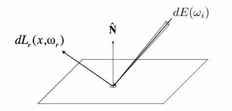
在上图中，假设有一束光从$\omega_i$方向射向区域$dA$，进而发生反射，我们可以将这过程拆分为两步。
首先，区域吸收入射光线的能量，我们有表达式：
其次，从该区域朝某个特定方向放射出去的能量，我们设为$dL_r(x,\omega_r)$。
那么我们只需要找到它们之间的比例，就能构建出漫反射的光照模型，具体而言就是找到函数：
经过变形，我们可以获得：
这个表达式告诉了我们，只要将所有入射光的能量全部加起来，就能获得某个出射方向上的总能量。
不难发现，这个表达式的计算是递归的，因为等式左边的结果是辐射率，而其计算所需的也是辐射率，这和真实光照环境有着良好的对应关系：对于一个物体，照亮它的不仅是光源直射的光，还有其它物体反射的光。
在这个表达式中，我们可以计算出物体的反射辐射率，并用该辐射率递归地参与其它物体的计算。
该方程只描述了反射场景，而某些物体除了反射光线外，自身也会发出光线，于是我们为该式加上一个自发光项：
这个方程称为渲染方程。
在渲染方程中，有些部分我们是已知的，包括自发光项、BRDF和余弦值，需要计算的其实只有两端的辐射率。
从而我们能将其简写为：
如果我们再引入算子，我们可以更进一步简写该式：
解该方程，我们获得：
这个式子实际上是按照反射次数对光线进行分解，如下所示：
我们之前提到的的光栅化可以很快地计算前两项（也就是自发光和直射光），但难以涉及到后面几项。
蒙特卡洛积分
计算光照的过程中，我们会有很多的积分计算，但不是所有的积分都能够直接计算，所以我们介绍蒙特卡洛积分法。
（这里我们只讨论定积分）
对于一般的积分问题，被积函数可能较为复杂，难以直接写出其定积分公式，如下所示：
传统的黎曼积分利用$dx$对应的矩形面积来计算，而蒙特卡洛积分则基于随机采样来进行计算。
具体而言，假设我们现在要求的积分为：
我们可以任取一种分布的随机变量（分布在积分域间）：
用该变量对$f(x)$进行采样，可获得定积分的近似值：
其中$N$为采样次数，一般而言，采样次数越多，结果会越精确。
更具体的理论知识这里就不展开了，这里只简单介绍该方法。
Path Tracing——路径追踪
之前我们介绍过递归光追算法，它其实存在一些问题。
主要的问题在反射上，该算法只考虑了镜面反射的情形，而忽略了漫反射情形，在面对下面两种材质时：
递归光追可以计算左侧茶壶的光照，但右边的就不行。
引申出来的另一个问题就是会丢失漫反射物体之间相互反射的光线，如下图中：
由于只考虑直接光照，递归光追算法会计算出很多暗区（左图的天花板等），而事实上，经过多次漫反射后，这些暗区其实是能够被点亮的（右图）。
更细节的地方是，这些暗区不仅是是否点亮的问题，可以看见右图中的两个长方体，都被照上了墙壁的颜色，而连照亮都没法考虑到的递归算法，自然也没法计算这部分着色。
为了解决这些问题，我们引入路径追踪算法，该算法基于渲染方程，这里我们再写一遍渲染方程：
现在我们介绍如何解该渲染方程。
这里我们先忽略自发光项，仅考虑反射项，即只计算：
这是一个积分域为半球面的积分，我们使用蒙特卡洛积分来计算。
这里我们的被积函数为：
采样的概率密度函数（PDF）有很多种取法，最简单的一种取法为均匀采样：
从而依据蒙特卡洛积分法，我们有：
这个形式就可以用计算机来进行计算了，我们只需要多取几个入射方向$\omega _i$然后将结果求和就可以，其伪代码形式为：
shade(p, wo)
Randomly choose N directions wi~pdf
Lo = 0.0
For each wi
\\ 对于每个入射方向
Trace a ray r(p, wi)
\\ 向该方向放出射线
If ray r hit the light
\\ 如果射线触碰到光源
Lo += (1 / N) * L_i * f_r * cosine / pdf(wi)
\\ 积分累加
Return Lo接下来我们需要完善另一种情形，就是入射光是由其它物体反射过来的，如下图所示：
这种情况其实相当于我们从$P$点观测$Q$点，因此我们可以递归地计算，伪代码修改起来很简单，只要在入射方向中增加一个判断：
shade(p, wo)
Randomly choose N directions wi~pdf
Lo = 0.0
For each wi
// 对于每个入射方向
Trace a ray r(p, wi)
// 向该方向放出射线
If ray r hit the light
// 如果射线触碰到光源
Lo += (1 / N) * L_i * f_r * cosine / pdf(wi)
// 积分累加
Else If ray r hit an object at q
// 如果射线触碰到其它物体
Lo += (1 / N) * shade(q, -wi) * f_r * cosine / pdf(wi)
// 递归计算
Return Lo但是，该方法仍然存在一些问题。
第一个问题，光线的数量会随着反射次数的增加指数级增长。
例如上图，假设我们每个反射采样100次，那么三次反射后，采样数会变为1000000，这还仅是一个初始反射点。
为了避免这种问题，我们将采样次数限定为1次（1的任何次幂都是1），从而伪代码修改为：
shade(p, wo)
Randomly choose ONE directions wi~pdf
// 只选择一个方向
Lo = 0.0
Trace a ray r(p, wi)
// 向该方向放出射线
If ray r hit the light
// 如果射线触碰到光源
Return L_i * f_r * cosine / pdf(wi)
// 直接计算
Else If ray r hit an object at q
// 如果射线触碰到其它物体
Return* shade(q, -wi) * f_r * cosine / pdf(wi)
// 递归计算这种只有1次采样的方法，就是我们所说的路径追踪。
（因为这相当于只有一条射线在反射，故称为路径）
不过大家很容易就会想到，这样的结果肯定会非常不准确，那这又该如何解决？
很简单，虽然我们的反射退化为路径，但我们可以计算多条路径，如下图：
由于像素存在大小，因此对于每个像素，我们可以引出很多条路径，只要路径数目足够，我们就能消除退化带来的不准确。
（事实上，即使像素是一个点，我们也可以在同一个方向上计算多次路径）
这个过程的伪代码为：
ray_generation(camPos, pixel)
Uniformly choose N sample positions within the pixel
// 在一个像素上选择多个采样方向
pixel_radiance = 0.0
For each sample in the pixel
// 对于每个方向
Shoot a ray r(camPos, cam_to_sample)
// 向该方向放出射线
If ray r hit the scene at p
// 如果射线触碰到物体
pixel_radiance += 1 / N * shade(p, sample_to_cam)
// 累加计算
Return pixel_radiance第二个问题就是shading函数的中止条件，在该函数中，我们还没有设置递归的出口，如果有射线进行了无限（足够多）次反射，同样会引发计算问题。
我们不能简单地使用反射次数来判断中止，因为截断反射意味着截断能量，导致光照失真。
我们有一个3次反射截断的渲染场景：
相同的场景，我们如果在17次截断，效果是这样的：
不难发现，上方的灯盒左侧墙壁都变得更加真实，而我们其实还不知道，17次反射是否已经足够。
解决的方案是使用俄罗斯轮盘赌（Russian Roulette，简称PR）。
简单来说就是限制一个概率$P$，对于每次shading函数，我们增加一个判断：
- 在$P$的概率下，我们返回$L_o/P$
- 在$1-P$的概率下，我们返回0
这么做可以让函数在某个递归时结束计算的同时，保证期望仍然准确，因为其期望为：
我们只需要在原先的伪代码前加上一段，并在结果上除以对应的概率即可：
shade(p, wo)
Manually specify a probability P_RR
// 定义概率
Randomly select ksi in a uniform dist. in [0, 1]
If (ksi > P_RR) return 0.0;
// 概率截断
Randomly choose ONE direction wi~pdf(w)
Trace a ray r(p, wi)
// 向该方向放出射线
If ray r hit the light
// 如果射线触碰到光源
Return L_i * f_r * cosine / pdf(wi) / P_RR
// 直接计算（除以概率）
Else If ray r hit an object at q
// 如果射线触碰到其它物体
Return* shade(q, -wi) * f_r * cosine / pdf(wi) / P_RR
// 递归计算（除以概率）到此，我们就获得了一个完全正确的路径追踪算法。
不过它仍旧不够高效，我们看下图中的对比：
左图是单个像素引出路径较少时的情形，可以看见噪点非常多，只有当路径数很多时，才能有右图这样的效果。
这是因为每条路径是否能够触碰到光源是一个比较“随缘”的过程，如下图：
对于光源比较大的情形（左图），我们可能几条路径都能触碰到光源，从而计算较快，但如果光源比较小（右图），那就可能在放出很多条路径的情况下也没几条能够触碰到光源，从而进行无效计算。
因此如果我们能只采样光源，那么就可以避免这些无效的计算。
我们假设现在是这样一个场景：
假设光源面积为$A$，由于我们的目标是采样光源，那么PDF应该是：
不过在渲染方中，我们的积分项是$d \omega$，因此我们知道它们之间的关系，这个关系其实并不难计算：
简单来说就是先计算$dA$在$d \omega$上的投影，然后利用相似缩放的性质获得结果。
（微分弧面近似于微分平面）
从而渲染方程改写为：
从而我们将光照拆分为两个部分：
蓝色的是直接光照部分，使用改写的渲染方程；橙色的是其它光照部分，使用原始渲染方程。
同时我们考虑下遮挡的情况：
于是，我们修改伪代码为：
shade(p, wo)
# 直接光照部分
Uniformly sample the light at x’ (pdf_light = 1 / A)
Shoot a ray from p to x’
If the ray is not blocked in the middle
L_dir = L_i * f_r * cos θ * cos θ’ / |x’ - p|^2 / pdf_light
# 其它反射部分
L_indir = 0.0
Test Russian Roulette with probability P_RR
Uniformly sample the hemisphere toward wi (pdf_hemi = 1 / 2pi)
Trace a ray r(p, wi)
If ray r hit a non-emitting object at q
L_indir = shade(q, -wi) * f_r * cos θ / pdf_hemi / P_RR
Return L_dir + L_indir但对于路径追踪来说，点光源非常难处理，这里就不介绍了。
至此，光线追踪章节正式结束，这应该是本系列最长的的一篇文章，笔者在撰写时也受益良多，学无止境啊。
好的，那我们下篇文章见。